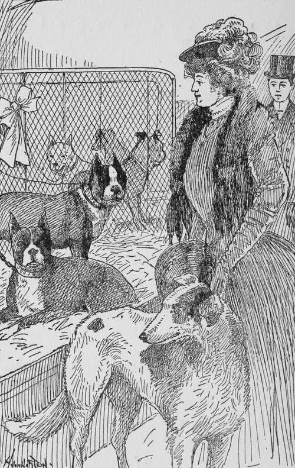
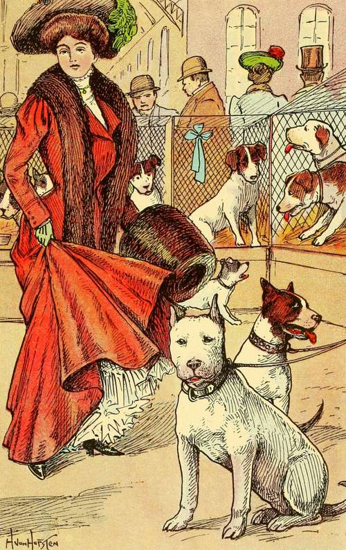
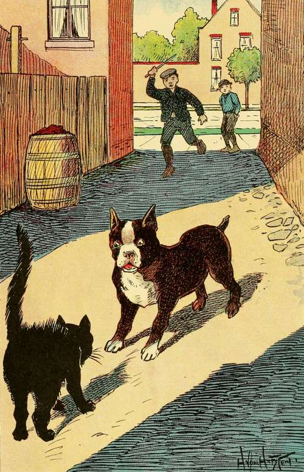

Chapter IV. What Happened To Buster
Description
This section is from the book "Dogs And Puppies", by Frances Trego Montgomery.
Chapter IV. What Happened To Buster
The third little puppy to go had the most exciting life of all. He was a handsome dark brin-dle, with a white streak down his face and around his nose. He also had a white breast, white fore legs, and white socks on his hind feet.
His name was Buster. He was sold to a breeder, who took him to a stable where there were a great many other dogs and puppies.
Here they had lots of fun playing together and running round in the straw. There was a large St. Bernard there, who had been with the breeder for a good many years, and who told them a great many stories of his experiences. And if ever any dog had seen life from all sides, this one had. He seemed to have been everywhere and to have seen everything. He told them once of a trip he took with his master across the ocean, and what a time he had, and how sick he was. He told them, too, of the time when he had saved a little girl from drowning.
And when one young puppy was complaining of the hard life he had led with his last master, who he said had not given him enough to eat, he told of the time he was lost in a strange city, and how cruel boys had stoned and chased him, until finally some one who knew something about dogs, recognized that he was valuable, and took him home and cared for him, and through an advertisement found who owned him.
This dog took a great fancy to Buster, and the two had many long talks together. Both were very sorry when, at the end of six months, Buster was sold to a gentleman who wished to give him as a present to the young lady to whom he was engaged.
He staid in this place only a short time, too, for one evening when the lovers were sitting on a sofa with the dog between them, he happened to catch his claw into a curl which hung over the young lady's shoulder, and in trying to loosen it, he pulled off her wig.
This so enraged her that she picked up a footstool and threw at him as he ran away, the wig still fast to his feet.
The young gentleman, who until this time did not know that she wore a wig, was so surprised and horrified at her display of temper, as well as to find that the golden hair which he had admired so much, was false, that he took his dog and went home, and it was soon heard that the engagement was broken.
This gentleman kept a bachelor apartment, and when he arrived home with his puppy, his valet took a great fancy to the dog, and told the master that if he would keep the dog, he would take care of it for him.
A short time after, the valet coaxed his master to enter his dog in a dog show, which he did, and he took all the prizes in his class and came home with blue ribbons galore.
"Well, of all the disagreeable places I ever got into," Buster was heard to say to a lady Boston Terrier that was shut in the cage next to his own at the show, "this is the worst. Do they think we are wild animals that are going to eat them,—that they should lock us in these little cages?"
"I HEARD A SOCIETY LADY SAY THAT OUR DAY IS OVER".
"I am quite sure," said the lady dog, whose name was Peggy, "that I should go mad in a short time if I were shut in here, with the people walking by, pointing their fingers, and making idiotic remarks, to say nothing of the noise of dozens and dozens of dogs barking at once and making such a clamor that one can not hear one's self think. Now just listen to that Great Dane's bark. It is so loud and strong it nearly shakes the building!"
"You are quite right," said Buster, "and listen to that little Pomeranian trying to answer back. It can scarcely be heard in this racket!"
"I heard a society lady say," said Peggy, "that these little Pomeranians are going to be the fashionable dog, and that our day is over. For my part, I shall be glad, for I would much rather live in a stable than be shut in a hot, stuffy house, and hear nothing from morning until night, but "Don't do that, you naughty dog".
"I can stand all that," said Buster, "but what I hate is to be led by a short chain. As if dogs did not like to run and chase cats now and then, just for excitement, and not walk along at the heels of some person".
"It certainly does take all the life out of one," said Peggy, "and when I am shut in the house and not allowed to run for several days, I always get dyspepsia".
"It is a wonder we don't all die," exclaimed Buster. "One day we are given three meals, the next they forget to give us more than one, and quite often they do not notice that our water basin is empty. And though we tell them with signs as plainly as with words, what we want, by running first to our basins, and then to the water faucet, they will stupidly look at us and say:
THE VALET COAXED HIS MASTER TO ENTER HIS DOG IN A DOG SHOW.
" What is it you want, that makes you follow me so?' "
"Have you ever run away?" asked Peggy.
"Yes, once, and I had the time of my life. I hid and staid out all night, and they were wild, for they thought I had been stolen, or had wandered away in the strange city and been lost. I could hear them calling, "Buster, Buster," and whistling until they were out of breath, and I was almost afraid to move for fear they would hear me and make me go in. All the time I was under the front porch of the house. I waited until it was quite dark, and then I ran out and down an alley. I never went near the fashionable parts of the city, but kept to the alleys and poor quarters, for I wanted to see how the people and dogs lived in these parts.
"Well, I can tell you, I saw enough that night to last me all my life, for everything was new to me. I had never been out of the aristocratic residence district of the city, and I had never been away from home alone.
"The first adventure I had was with a cat which I started to chase up an alley. Well, you should have seen that cat raise her back and fly at me! She really looked mountain high to poor me, when she started to fight instead of run, as I had expected her to do. Before I knew it, she gave me a scratch the whole length of my face. This made me mad, and the way I pounced on that cat was a caution, and I really believe I would have killed her, had not some of the boys in the alley started to stone us. She ran up a tree, and I escaped under a fence into a large yard where I was nearly eaten up alive by a big Mastiff, the size of an elephant".
"Oh, you are joking," said Peggy, "dogs don't grow so large".
"Well, that's the way it looked to me, any way, when I crawled under the fence and nearly fell down his neck. He was standing near his kennel when my head appeared from under the fence.
"Had the coachman not rescued me by letting me run into the stable, I would have been swallowed alive. Afterward I learned that he did it because he saw that I was a valuable dog, and he thought he would keep me and get any reward that might be offered. He knew I was too valuable a dog to let run loose, and when he read on my collar who I belonged to, he said to the stable boy:
"Mike, I have a bonanza in this dog. See who he belongs to. I am going to keep him and make them offer a big reward before I return him. And they will pay it, for this dog is entered to appear at the dog show, and his master is very rich".
"If you don't give me part of the money, I will tell the mistress that you are keeping stolen dogs shut in the stable," said the boy. "Or I will go to the dog's owner and tell him that you are holding the dog for a reward".
"Oh, you will, will you, you miserable sneak," said the coachman to the stable-boy. "I have half a mind to choke you," and they fell to fighting, and while they were fighting I escaped through the back door and into the alley. Once there, I let all cats alone, and ran home as fast as I could. When they opened the front door the next morning, there I sat. You should have seen the petting I got, and the big, hot breakfast they gave me".
"I got lost once," said Peggy, "but only for a few hours. My master's little boy was taking me across the city, and forgot all about me right in the heart of town, and when he got on a street car and left me there, the noise and the racket, and the people and wagons scared me, I tell you, but I finally found my way home again. I thought I never would, though. Harry, that's my master's little boy's name, was mighty glad to see me, when I got home, you can just bet on that. I think my master had scolded him for his carelessness".
"I shouldn't care to get lost," said Buster. "Say, see that Mastiff, doesn't he think he's big?"
"And see that Blenheim over there. Aren't they silly little things? For my part, I am proud to think that I am a Boston Terrier, aren't you, Buster?"
"Yes, indeed! We are not so clumsy that we knock everything down in the parlor, when we turn around, and not so small as to be of no use. What would that thing," I am sorry to say Buster nodded toward the Blenheim, who was surrounded by a crowd of admiring ladies, "What would that 'thing' do if a burglar came into the house?"
"By the way," asked Buster, "What is your master's name?" "Mr. Buckstone".
"You don't say. Why, then we shall be neighbors this summer. My master has just bought the place next to Mr. Buckstone's summer home, and we are going there the first of May".
"How perfectly lovely," said Peggy. "Then this won't be our last meeting, as I was afraid it would be".
"No, indeed it won't if I can help it, for to know you is to love you".
And as Buster had listened to his master making love to his golden haired girl, before he found out that she had a bad temper and wore a wig, he knew how to make love in fine style, and before the dog show was over, Buster and Peggy were engaged to be married, and the wedding was to take place when they met in the country.
This wedding took place in due time, and I now have one of their beautiful puppies, and his. name is Punch.
"SHE REALLY LOOKED MOUNTAIN HIGH TO POOR ME".
Continue to:
- prev: Chapter III. A Pleasant Home For Punch
- Table of Contents
- next: Chapter V. Patsy And His Little Lame Mistress